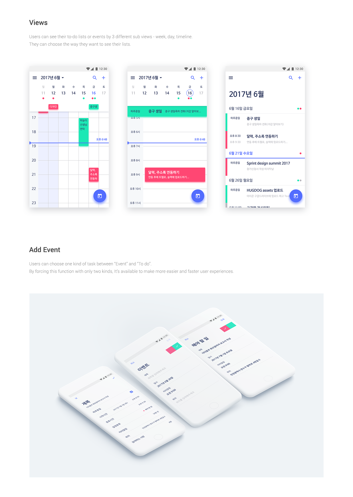
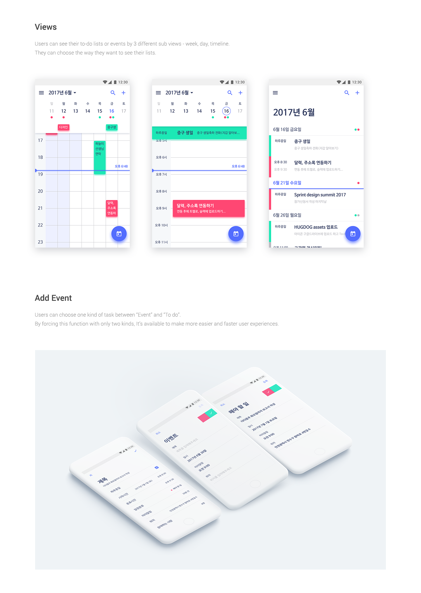

Sprinter - ToDo list & task management application UI/UX design
Simple and Clean designed to-do list & task management application.
Available soon on Google Play Store! (Android only, iOS later)
Click Here to Watch on Behance
Clickable prototype is available on MarvelApp
Title : ToDo list & task management application UI/UX design
Date : July 13, 2017 (10 Weeks)
Tools : Adobe Photoshop CC 2017, Adobe Illustrator CC 2017, Adobe Experience Design CC 2017, Zeplin, Trello
Designer : Hyouk Seo (Spemer)
Developer : Byeongdae Hwang